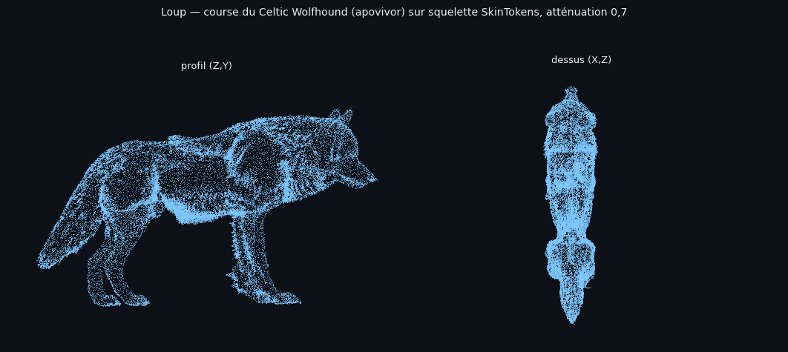
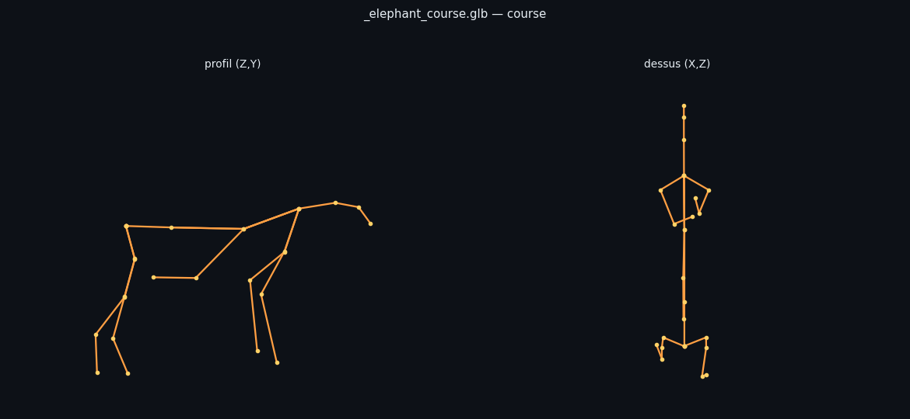

La course du Celtic Wolfhound (pack apovivor, exportée d'Unreal ce soir) retargetée sur le squelette généré par SkinTokens pour un éléphant FabMesh. Aucun gabarit : le squelette est celui de SkinTokens, la banque fournit le mouvement.
| Étape | Résultat |
|---|---|
| export Unreal (AnimSequence → FBX) | 10 clips wolfhound + export complet en cours (lecture seule sur le projet) |
| conversion FBX → GLB (Blender) | 10/10, noms d'os préservés (frontHip_R, Tail0_M…) |
| rig natif SkinTokens de l'éléphant | 1,33 M sommets |
| retargeting (échelle cm Unreal ×0,02 auto) | 31 canaux, 16 images |
| amplitude du maillage animé | 70,3 % — sans éclatement (p99 : 46,4 %) |

